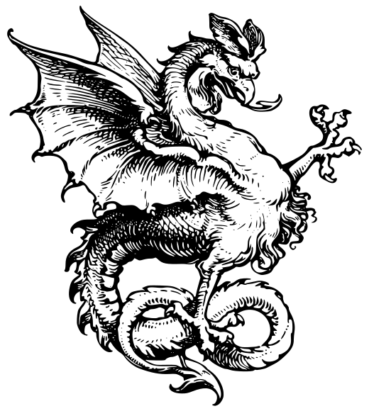

第一章 伝説の神殿

カッパードラゴンは古代から語り継がれてきた伝説のドラゴンである。その身体は赤褐色の金属のような鱗に覆われ、山にも匹敵する巨体を持つとされていた。しかし、その姿を実際に見たという確かな記録は存在せず、多くの研究者は神話や寓話の一種に過ぎないと考えていた。
それでも数多くの古文書には共通した記述が残されていた。北方のどこかに存在する巨大な神殿。その最奥で、銅の王と呼ばれるドラゴンが永遠の眠りについているというのである。だが神殿の位置を示す記録は存在せず、長い年月の中で伝説は半ば忘れ去られていった。
状況が変化したのは、失われた古代資料群である「コードグリッド文献」が発見されたことによる。この文献は地図、天体観測記録、建築図面、祭祀文書が複雑に組み合わされた特殊な記録群であり、長年その意味を解読できる者はいなかった。しかし研究が進むにつれ、それぞれの記録を重ね合わせることで隠された情報が浮かび上がることが判明した。
文献の断片には何度も同じ文章が記されていた。
「銅の王は眠る。」
「世界が忘れても神殿は忘れない。」
「最奥に至る者は守護者を見る。」
研究院はこれらの記述をもとに大規模な調査隊を編成し、コードグリッド文献が示す座標を追跡した。そして数年にわたる探索の末、北方山脈の地下深くで巨大な神殿を発見したのである。神殿の外壁には古代文字が刻まれ、その内容はすべて一頭のドラゴンについて語っていた。調査隊は、この場所こそ伝説に語られる神殿であると確信した。
第二章 最奥への道
神殿内部は想像を超える規模だった。巨大な回廊が地下深くまで続き、天井を支える柱は森の木々のように並び立っていた。壁面には無数の碑文や彫刻が残されており、そのほとんどが赤褐色の鱗を持つ巨大なドラゴンを描いていた。
調査が進むにつれて、通常では説明できない痕跡も発見された。岩盤には幅数メートルに及ぶ爪痕が刻まれ、建物ほどの大きさを持つ鱗の欠片が複数見つかった。さらに神殿の深部では大量の銅鉱石が不自然な形で集積しており、まるで何者かが意図的に運び込んだかのような状態になっていた。
神殿の構造にも特徴があった。複雑に見える通路や広間は最終的にすべて同じ場所へ収束するよう設計されていたのである。まるで神殿全体が、一つの存在のもとへ訪問者を導くために造られた巨大な道標のようだった。
調査開始から三年後、ついに最深部へ続く封印扉が発見された。高さ百メートルを超えるその扉には、翼を広げた巨大なドラゴンの姿が刻まれていた。封印解除には半年を要したが、最終的に古代機構は作動を停止し、重々しい音とともに扉が開かれた。
その先には地下空洞とは思えないほど広大な空間が広がっていた。中央には巨大な祭壇が築かれ、その奥には小山のような巨大な影が横たわっている。最初は岩山だと思われたが、近づくにつれて奇妙な違和感が生まれた。表面は岩ではなく、無数の鱗で覆われていたのである。さらに空間全体には一定の振動が響いていた。それは地鳴りではなかった。ゆっくりと繰り返される呼吸だった。
第三章 カッパードラゴン
調査隊が祭壇の前で立ち尽くしていたとき、広間の奥で何かが動いた。次の瞬間、暗闇の中に二つの黄金色の光が現れる。それは瞳だった。山だと思われていた存在が、ゆっくりと目を開いたのである。
巨大な首が持ち上がる。塔のような角が闇の中から姿を現し、赤褐色の鱗が鈍い光を反射する。その一枚一枚は建物ほどの大きさを持ち、わずかに身体を動かしただけで神殿全体が震えた。
調査隊は言葉を失った。伝説の中でしか語られてこなかった存在が、今まさに目の前にいたからである。神殿の最奥で眠る銅の王。コードグリッド文献が示し続けてきた守護者。カッパードラゴンは確かに実在していた。
その巨体はあまりにも巨大だった。神殿がドラゴンを収めているのではない。むしろ神殿そのものが、この一頭を守るために築かれたように見えた。数千年の時を眠りながら過ごしていたにもかかわらず、その存在感は圧倒的だった。
やがてカッパードラゴンは静かに視線を巡らせ、調査隊を見下ろした。その瞳には敵意も怒りもなかった。ただ、世界の歴史そのものを見続けてきたかのような深い知性が宿っていた。
そして神殿全体を震わせる低い声が響いた。
「……コードグリッドは、役目を果たしたのだな。」
その言葉を聞いた瞬間、調査隊は理解した。コードグリッド文献は単なる歴史資料ではなかったのである。それは未来の誰かをこの場所へ導くために残された道標であり、神殿への招待状だった。
カッパードラゴンは再びゆっくりと目を閉じた。しかし調査隊は知っていた。目の前で起きた出来事は幻ではない。伝説は真実であり、神話は現実だったのだ。
こうして歴史上初めて、カッパードラゴンの存在は確認された。北方山脈の地下深く、コードグリッド文献が示した神殿の最奥で、世界最古のドラゴンは今も静かに眠り続けているのである。
Dragon Flying Cycle by RedCoreTimber (CC BY 4.0)